- 506. Hol kell közlekedni a párhuzamos közlekedésre alkalmas úttesten? #703514
- Általában a külső (jobb szélső) forgalmi sávban.
- Mindig a belső forgalmi sávban.
- Mindig a külső forgalmi sávban.
- 507. Figyelembe kell-e venni a párhuzamos közlekedés szempontjából az autóbusz-forgalmi sávot? #703516
- Nem.
- Igen.
- 508. Figyelembe kell-e venni a párhuzamos közlekedés szempontjából a kerékpársávot? #703518
- Nem.
- Igen.
- 509. Szabad-e a párhuzamos közlekedésre alkalmas úttesten a forgalmi sávokat a gyorsabb továbbhaladás érdekében kis távolságon belül ismételten változtatni? #703519
- Nem.
- Igen.
- 510. Szabad-e a párhuzamos közlekedésre alkalmas úttest felezővonalát átlépni? #703520
- A balra bekanyarodás és a megfordulás esetét kivéve nem.
- Igen, kellő körültekintéssel bárhol.
- 511. Szabad-e a párhuzamos közlekedésre alkalmas úttesten két járműnek ugyanabban a forgalmi sávban egymás mellett elhaladni? #703521
- Nem, kivéve az egy nyomon haladó jármű melletti elhaladást.
- Igen.
- 512. Szabad-e a párhuzamos közlekedésre alkalmas úttesten kijelölt gyalogos-átkelőhelyen másik jármű mellett elhaladni? #703522
- Nem.
- Igen.
- 513. Szabad-e forgalmi sávot változtatni a párhuzamos közlekedésre alkalmas úttesten, ha a forgalmi sávokban összefüggő járműoszlopok alakultak ki? #703523
- Csak akkor, ha a járművezető bekanyarodásra vagy megállásra készül fel.
- Igen, korlátozás nélkül.
- Összefüggő járműoszlopok esetén sosem szabad forgalmi sávot változtatni.
- 514. Mikor szabad közlekedni a kommunális szemét szállítására szolgáló járművel az autóbusz-forgalmi sávban? #703524
- 20 és 06 óra között.
- 06 és 22 óra között.
- Sosem.
- 515. Mely járművek kötelesek a kapaszkodósávon közlekedni? #714874
- Egyéb jelzés hiányában csak azok a járművek, amelyek lakott területen kívül 70 km/h, lakott területen pedig 40 km/h sebességnél lassabban haladnak.
- Egyéb jelzés hiányában csak azok a járművek, amelyek lakott területen kívül 90 km/h, lakott területen pedig 50 km/h sebességnél lassabban haladnak.
- Egyéb jelzés hiányában csak azok a járművek, amelyek lakott területen kívül 60 km/h, lakott területen pedig 30 km/h sebességnél lassabban haladnak.
- 516. Szabad-e az autóbusz-forgalmi sávban kétkerekű segédmotoros kerékpárral folyamatosan közlekedni? #714876
- Igen, az autóbusz- és trolibuszforgalom zavarása nélkül.
- Nem.
- Igen, feltétel nélkül.
- 517. Szabad-e elhaladni személygépkocsival ugyanabban a forgalmi sávban egy kétkerekű motorkerékpár mellett? #714892
- Igen, amennyiben a manőver során a biztonságos oldaltávolság megtartható.
- Nem, mert az előzés közben minden esetben igénybe kell venni a másik forgalmi sávot is.
- 518. Milyen körforgalmakban kell a párhuzamos közlekedés szabályait alkalmazni? #721769
- A párhuzamos közlekedésre alkalmas körforgalmakban.
- Csak a háromsávos körforgalmakban.
- Minden körforgalomban.
- 519. Szabad-e a kétkerekű motorkerékpárral folyamatosan közlekedni az autóbusz-forgalmi sávban? #721773
- Igen, az autóbusz- és trolibuszforgalom zavarása nélkül.
- Nem.
- Igen, feltétel nélkül.
- 520. Közlekedhet-e a személytaxi az autóbusz-forgalmi sávban? #721774
- Igen, az autóbusz- és trolibuszforgalom zavarása nélkül.
- Nem.
- Igen, feltétel nélkül.
- 521. Haladhat-e motorkerékpárral a lakott területen lévő, útburkolati jelekkel jelölt háromsávos úton folyamatosan a harmadik (belső) forgalmi sávban? #721775
- Igen, az Ön mögött gyorsabban haladók akadályozása nélkül.
- Igen, de csak bekanyarodási szándékkal.
- Nem.
- 522. Szabad-e folyamatosan előzni motorkerékpárral és személygépkocsival a párhuzamos közlekedésre alkalmas úttesten? #721776
- Igen, feltéve, hogy ezzel a mögötte gyorsabban haladó járművek közlekedését nem akadályozza.
- Igen, feltétel nélkül.
- A folyamatos előzés mindig tilos.
- 523. Szabad-e a lakott területen lévő háromsávos út középső forgalmi sávjában közlekedve elhaladni az Öntől balra lévő, legbelső forgalmi sávban lassabban haladó jármű mellett? #721777
- Igen, fokozott figyelemmel.
- Nem.
- 524. Útburkolati jelekkel jelölt háromsávos úton közlekedik motorkerékpárral. Szabad-e ráhajtani a harmadik (belső) forgalmi sávra? #721779
- Igen.
- Nem.
- Csak bekanyarodási szándékkal.
- 525. 21 órakor az autóbusz-forgalmi sávban közlekedik motorkerékpárjával. Számítania kell-e ebben a sávban kommunális szemetet szállító jármű közlekedésére? #721780
- Igen.
- Nem, csak 06 és 20 óra között kell ilyen járműre számítani.
- Nem.
- 526. Figyelembe kell-e venni a párhuzamos közlekedés szempontjából az autóbusz-forgalmi sávot és az autóbuszöblöt? #721783
- Nem.
- Igen.
- Csak motorkerékpárral közlekedve.
- 527. Figyelembe kell-e venni a párhuzamos közlekedés szempontjából a kapaszkodósávot? #721784
- Nem.
- Igen.
- Csak motorkerékpárral közlekedve.
- 528. Figyelembe kell-e venni a párhuzamos közlekedés szempontjából a lassító- és gyorsítósávot? #721785
- Nem.
- Igen.
- Csak motorkerékpárral közlekedve.
- 529. Figyelembe kell-e venni a párhuzamos közlekedés szempontjából a kerékpársávot? #721786
- Nem.
- Igen.
- Csak segédmotoros kerékpárral.
- 530. Szabad-e a forgalmi sávokat - a gyorsabb előrehaladás érdekében - kis távolságon belül ismételten változtatni? #721787
- Nem.
- Igen, szabad.
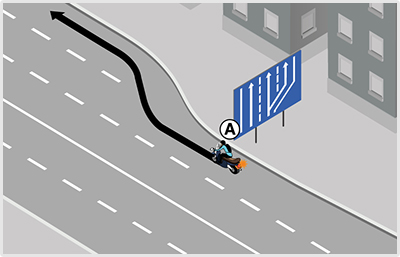
- 531. Mikor köteles a képen látható ’A’ jelű motorkerékpár lakott területen a kapaszkodósávon haladni? #721788
- Ha 40 km/h sebességnél lassabban halad.
- Ha 50 km/h sebességnél lassabban halad.
- Mindig, ha más nem közlekedik az úton.
- 532. Ön az ’A’ jelű motorkerékpárt vezeti. Lakott területen szabályosan közlekedik a képen látható kapaszkodósávon? #721789
- Igen.
- Igen, de csak akkor, ha 40 km/h sebességnél lassabban halad.
- Nem.
- 533. Haladhat-e 50 km/h sebességgel a képen látható ’A’ jelű motorkerékpár lakott területen a kapaszkodósávon? #721790
- Igen.
- Nem, mivel csak 40 km/h sebességnél lassabban közlekedők haladhatnak a kapaszkodósávon.
- Nem, mert azon csak tehergépkocsik közlekedhetnek.
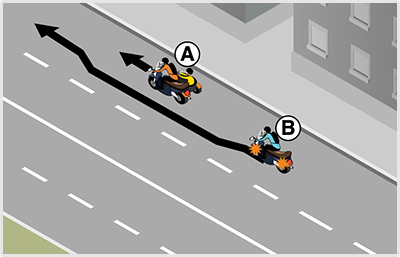
- 534. Köteles-e a ’B’ jelű motorkerékpár vezetője az oldalkocsis motorkerékpáros előzése közben irányjelzőjét használni? #721806
- Igen, mert forgalmi sávot kell változtatnia.
- Nem.
- 535. A képen látható helyen a ’B’ jelű motorkerékpár vezetője megelőzheti-e ugyanabban a forgalmi sávban az ’A’ jelű oldalkocsis motorkerékpárost? #721807
- Nem, mert két járműnek ugyanabban a forgalmi sávban tilos egymás mellett elhaladni.
- Igen, mert minden motorkerékpár mellett szabad elhaladni ugyanabban a forgalmi sávban.
- 536. Ön a ’B’ jelű motorkerékpárt vezeti. Megelőzheti-e a képen látható módon az ’A’ jelű oldalkocsis motorkerékpárost? #721808
- Nem.
- Igen.
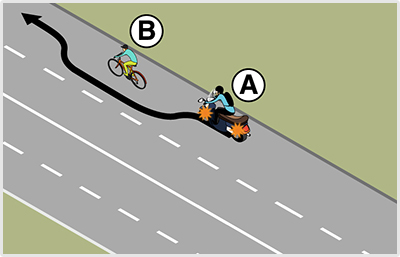
- 537. Ön az ’A’ jelű motorkerékpárt vezeti. Elhaladhat-e ugyanabban a forgalmi sávban a ’B’ jelű kerékpáros mellett? #721820
- Ha biztonságos oldaltávolságot tud tartani, akkor igen.
- Nem, mert párhuzamos közlekedésre alkalmas úton az előzés esetén köteles átmenni a belső forgalmi sávba.
- Nem, mert ezen a helyen ugyanabban a forgalmi sávban nem előzheti meg a kerékpárost.
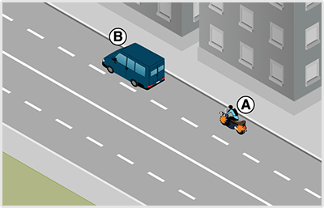
- 538. Szabad-e megelőznie az ’A’ jelű motorkerékpár vezetőjének a ’B’ jelű gépkocsit ugyanabban a forgalmi sávban az ábrán látható helyen? #721826
- Nem.
- Igen, ha elég széles a forgalmi sáv.
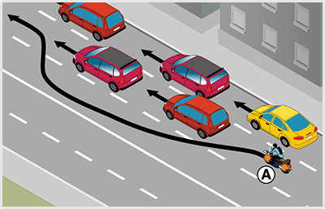
- 539. Lakott területen szabályosan előz a képen látható ’A’ jelű motorkerékpáros? #721838
- Igen.
- Nem, mert három forgalmi sávos úton a legbelső forgalmi sávban csak személygépkocsi hajthat végre előzést.
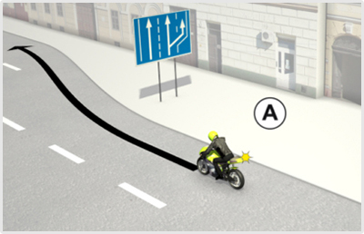
- 540. Mikor köteles a képen látható ’A’ jelű motorkerékpár lakott területen a kapaszkodósávon haladni? #722141
- Ha 40 km/h sebességnél lassabban halad.
- Ha 50 km/h sebességnél lassabban halad.
- Mindig, ha más nem közlekedik az úton.
- 541. Ön az ’A’ jelű motorkerékpárt vezeti. Lakott területen szabályosan közlekedik a képen látható kapaszkodósávon? #722142
- Igen.
- Igen, de csak akkor, ha 40 km/h sebességnél lassabban halad.
- Nem.
- 542. Haladhat-e 50 km/h sebességgel a képen látható ’A’ jelű motorkerékpár lakott területen a kapaszkodósávon? #722143
- Igen.
- Nem, mivel csak 40 km/h sebességnél lassabban közlekedők haladhatnak a kapaszkodósávon.
- Nem, mert azon csak tehergépkocsik közlekedhetnek.
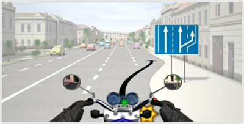
- 543. Ön a kormánnyal jelzett járművet vezeti. Mikor köteles lakott területen a kapaszkodósávon haladni? #722160
- Ha 40 km/h sebességnél lassabban halad.
- Ha 50 km/h sebességnél lassabban halad.
- Mindig, ha más nem közlekedik az úton.
- 544. Ön a kormánnyal jelzett járművet vezeti. Lakott területen szabályosan közlekedik a képen látható kapaszkodósávon? #722161
- Igen.
- Igen, de csak akkor, ha 40 km/h sebességnél lassabban halad.
- Nem.
- 545. Ön a kormánnyal jelzett járművet vezeti. Haladhat-e 50 km/h sebességgel lakott területen a kapaszkodósávon? #722162
- Igen.
- Nem, mivel csak 40 km/h sebességnél lassabban közlekedők haladhatnak a kapaszkodósávon.
- Nem, mert azon csak tehergépkocsik közlekedhetnek.
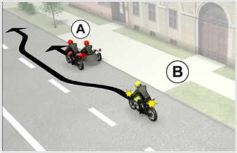
- 546. Köteles-e a ’B’ jelű motorkerékpár vezetője az oldalkocsis motorkerékpáros előzése közben irányjelzőjét használni? #722196
- Igen, mert forgalmi sávot kell változtatnia.
- Nem.
- 547. A képen látható helyen a ’B’ jelű motorkerékpár vezetője megelőzheti-e ugyanabban a forgalmi sávban az ’A’ jelű oldalkocsis motorkerékpárost? #722197
- Nem, mert a két járműnek ugyanabban a forgalmi sávban tilos egymás mellett elhaladni.
- Igen, mert minden motorkerékpár mellett szabad elhaladni ugyanabban a forgalmi sávban.
- 548. Ön a ’B’ jelű motorkerékpárt vezeti. Megelőzheti-e a képen látható módon az ’A’ jelű oldalkocsis motorkerékpárost? #722198
- Nem.
- Igen.
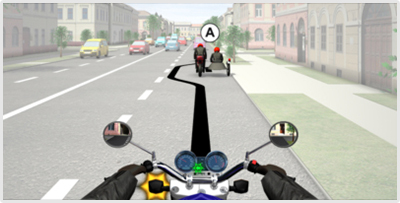
- 549. Ön a kormánnyal jelzett járművet vezetve köteles-e az oldalkocsis motorkerékpáros előzése közben irányjelzőjét használni? #722218
- Igen, mert forgalmi sávot kell változtatnia.
- Nem.
- 550. Ön a kormánnyal jelzett járművet vezetve megelőzheti-e ugyanabban a forgalmi sávban az ’A’ jelű oldalkocsis motorkerékpárost? #722219
- Nem, mert két járműnek ugyanabban a forgalmi sávban tilos egymás mellett elhaladni.
- Igen, mert minden motorkerékpár mellett szabad elhaladni ugyanabban a forgalmi sávban.
- 551. Ön a kormánnyal jelzett járművet vezeti. Megelőzheti-e a képen látható módon az ’A’ jelű oldalkocsis motorkerékpárost? #722220
- Nem.
- Igen.
- 552. Ön a kormánnyal jelzett járművet vezetve köteles-e lakott területen a jobb szélső forgalmi sávba visszatérni, miután megelőzte a ’B’ jelű gépkocsit? #722533
- Nem.
- Igen.
- 553. Ön a kormánnyal jelzett járművet vezeti. Szabad-e megelőznie a ’B’ jelű gépkocsit ugyanabban a forgalmi sávban az ábrán látható helyen? #722534
- Nem.
- Igen, ha elég széles a forgalmi sáv.

- 554. Lakott területen szabályosan előz a képen látható ’A’ jelű motorkerékpáros? #723032
- Igen.
- Nem.
- 555. Lakott területen az ’A’ jelű motorkerékpáros köteles-e a személygépkocsik megelőzése után a jobb oldali forgalmi sávba visszatérni? #723033
- Nem.
- Igen.

- 556. Ön a kormánnyal jelzett járművet vezeti lakott területen. Szabályos előzést hajt végre? #723043
- Igen.
- Nem.
- 557. Ön a kormánnyal jelzett járművet vezeti lakott területen. Az ábrázolt előzést követően köteles a jobb oldali forgalmi sávba visszatérni? #723044
- Nem.
- Igen.
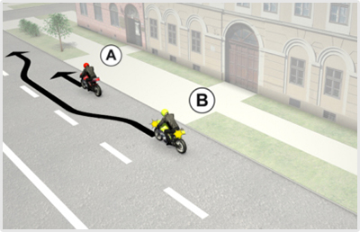
- 558. A képen látható helyen a ’B’ jelű motorkerékpár vezetője megelőzheti-e ugyanabban a forgalmi sávban az ’A’ jelű motorkerékpárost? #723303
- Igen, mert engedélyezett az egy nyomon haladó jármű azonos forgalmi sávon belüli előzése.
- Nem, mert két járműnek ugyanabban a forgalmi sávban tilos egymás mellett elhaladni.
- 559. Ön a ’B’ jelű motorkerékpárt vezeti. Szabad-e megelőznie a képen látható módon az ’A’ jelű kétkerekű motorkerékpárost? #723304
- Igen.
- Nem.
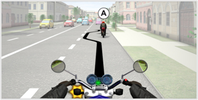
- 560. Ön a kormánnyal jelzett járművet vezeti. A képen látható helyen megelőzheti-e ugyanabban a forgalmi sávban az ’A’ jelű motorkerékpárost? #723320
- Igen, mert engedélyezett az egy nyomon haladó jármű azonos forgalmi sávon belüli előzése.
- Nem, mert két járműnek ugyanabban a forgalmi sávban tilos egymás mellett elhaladni.
- 561. Ön a kormánnyal jelzett járművet vezeti. Megelőzheti-e a képen látható módon az ’A’ jelű kétkerekű motorkerékpárost? #723321
- Igen.
- Nem.
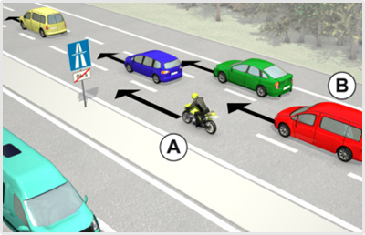
- 562. Ön az ’A’ jelű motorkerékpárt vezeti. Haladhat-e folyamatosan a lakott területen kívüli autópálya belső forgalmi sávjában? #723353
- Igen, mindaddig, amíg a középső forgalmi sávban haladó járműveket előzi.
- Igen, megkötés nélkül, hiszen motorkerékpárral az autópálya bármelyik forgalmi sávjában közlekedhet folyamatosan.
- Nem.
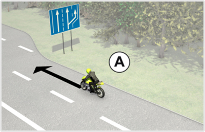
- 563. Az ’A’ jelű motorkerékpár lakott területen kívül 70 km/h sebességgel halad. Szabályos helyen közlekedik? #723360
- Igen.
- Nem, mert a kapaszkodósávon köteles haladni.
- 564. Az ’A’ jelű motorkerékpár lakott területen kívül a ködös idő miatt csak 60 km/h sebességgel halad. Szabályos helyen közlekedik? #723361
- Nem, mert ezzel a sebességgel a kapaszkodósávon kell haladnia.
- Igen, mert rossz látási viszonyok esetén ez a legbiztonságosabb forgalmi sáv.
- Igen, mindaddig, amíg az úton nem érkezik másik jármű.
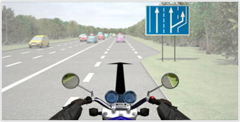
- 565. Ön a kormánnyal jelzett motorkerékpárral lakott területen kívül 80 km/h sebességgel halad. Szabályos helyen közlekedik? #723376
- Igen.
- Nem, mert a kapaszkodósávon köteles haladni.
- 566. Ön lakott területen kívül a ködös idő miatt a kormánnyal jelzett motorkerékpárral csak 60 km/h sebességgel halad. Szabályos helyen közlekedik? #723377
- Nem, mert ezzel a sebességgel a kapaszkodósávon kell haladnia.
- Igen, mert rossz látási viszonyok esetén ez a legbiztonságosabb forgalmi sáv.
- Igen, mindaddig, amíg az úton nem érkezik másik jármű.

- 567. Melyik jármű haladhat tovább elsőként a képen látható helyen? #723392
- Az ’A’ jelű személygépkocsi.
- A ’B’ jelű motorkerékpár.
- Kölcsönös megegyezés alapján haladhatnak tovább.
- 568. Ön a ’B’ jelű motorkerékpárt vezeti. A képen látható helyen... #723393
- elsőbbséget kell adnia az ’A’ jelű személygépkocsi részére.
- kölcsönös megegyezés alapján haladhatnak tovább.
- elsőbbsége van az ’A’ jelű járművel szemben.
- 569. Ön a ’B’ jelű motorkerékpárt vezeti. Köteles-e a képen látható helyzetben az irányjelzőjét használni? #723394
- Igen, mert csak irányváltoztatással tudja folytatni az útját.
- Nem, mert a többi jármű vezetője jól láthatja, hogy az úttesten lévő akadályt ki fogja kerülni.
- Nem, mert ez kényszer sávváltoztatásnak minősül.

- 570. A képen látható helyen melyik jármű haladhat tovább elsőként? #723421
- A ’B’ jelű személygépkocsi.
- Az ’A’ jelű motorkerékpár.
- Kölcsönös megegyezés alapján haladhatnak tovább.
- 571. Ön az ’A’ jelű motorkerékpárt vezeti. A képen látható helyen... #723422
- elsőbbséget kell adnia a ’B’ jelű személygépkocsi részére.
- kölcsönös megegyezés alapján haladhatnak tovább.
- elsőbbsége van a ’B’ jelű járművel szemben.

- 572. A képen látható helyen mindkét jármű csak irányváltoztatással tudja az útját folytatni. Melyik jármű haladhat tovább elsőként? #723441
- Az ’A’ jelű jármű.
- A ’B’ jelű személygépkocsi.
- Kölcsönös megegyezés alapján haladhatnak tovább.
- 573. Ön az ’A’ jelű motorkerékpárt vezeti. A képen látható helyen... #723442
- elsőbbsége van a ’B’ jelű személygépkocsival szemben.
- elsőbbséget kell adnia a ’B’ jelű személygépkocsi részére.
- meg kell egyezniük a továbbhaladási sorrendben.
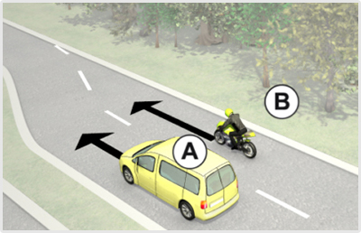
- 574. Ön a ’B’ jelű járművet vezeti. A képen látható helyen... #723461
- elsőbbséget kell adnia az ’A’ jelű személygépkocsi részére.
- elsőbbsége van az ’A’ jelű személygépkocsival szemben
- meg kell egyezniük a továbbhaladási sorrendben.
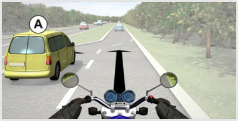
- 575. Ön a kormánnyal jelzett járművet vezeti. Melyik jármű haladhat tovább elsőként az ábrán látható helyen? #723484
- Az ’A’ jelű személygépkocsi.
- Az Ön által vezetett jármű.
- Kölcsönös megegyezés alapján haladhatnak tovább.
- 576. Ön a kormánnyal jelzett járművet vezeti. A képen látható helyen... #723485
- elsőbbséget kell adnia az ’A’ jelű személygépkocsi részére.
- elsőbbsége van az ’A’ jelű személygépkocsival szemben
- meg kell egyezniük a továbbhaladási sorrendben.

- 577. Elhaladhat-e a ’C’ jelű motorkerékpáros egyszerre több jármű mellett az ábrázolt helyen? #723593
- Igen.
- Nem.
- Csak a 'B' jelű mellett, majd a két személygépkocsi közé vissza kell térnie.
- 578. Lakott területen az ábrán látható helyen szabad-e haladnia a ’C’ jelű motorkerékpárosnak folyamatosan a belső forgalmi sávban azt követően is, hogy megelőzte a ’B’ és az ’A’ jelű személygépkocsikat? #723594
- Igen.
- Csak akkor, ha balra kíván kanyarodni.
- Nem.
- 579. Köteles-e a ’C’ jelű motorkerékpáros a képen látható helyzetben az irányjelzőjét folyamatosan működtetni? #723596
- Nem.
- Igen.
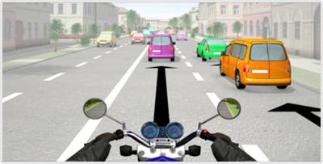
- 580. Ön a kormánnyal jelzett járművet vezeti. A képen látható helyen megelőzhet-e egyszerre több járművet? #723605
- Igen.
- Nem.
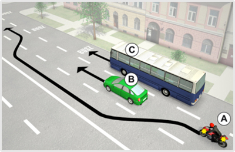
- 581. Szabályos-e, ha az ’A’ jelű motorkerékpáros az ábrán látható módon előzi meg a ’B’ jelű személygépkocsit? #723606
- Igen.
- Nem.
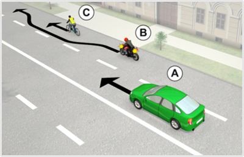
- 582. Ön a ’B’ jelű motorkerékpárt vezeti. Megelőzheti-e az ábrán látható módon a ’C’ jelű kerékpárost? #723608
- Amennyiben biztonságos oldaltávolságot tud tartani, akkor igen.
- Nem, mert azonos forgalmi sávon belül tilos előzni.
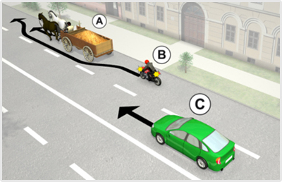
- 583. Ön a ’B’ jelű motorkerékpárt vezeti. Szabad-e megelőznie az ábrán látható módon az ’A’ jelű állati erővel vontatott járművet? #723609
- Nem.
- Igen.
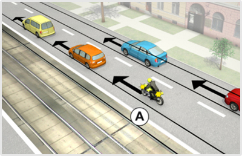
- 584. Ön az ’A’ jelű motorkerékpárt vezeti. Tovább közlekedhet-e lakott területen a belső forgalmi sávban? #723660
- Igen, mindaddig, amíg a mögötte gyorsabban haladó járművek közlekedését nem akadályozza.
- Igen, de csak akkor, ha a következő útkereszteződésben balra kíván kanyarodni.
- Nem, a belső forgalmi sávban csak előzés céljából szabad közlekedni.

- 585. Az ’A’ jelű motorkerékpár lakott területen kívül 75 km/h sebességgel halad. Szabályos helyen közlekedik? #723672
- Igen.
- Nem, mert a kapaszkodósávon köteles haladni.
- Nem, mert a megengedettnél lassabban történő haladása miatt ezen a sávon veszélyhelyzetet teremt.
- 586. Mit jelent a képen látható közúti jelzőtábla? #723673
- ’Kapaszkodósáv’.
- ’A besorolás rendje a következő útkereszteződésben’.
- ’Lassítósáv’.
- 587. Az ’A’ jelű motorkerékpár lakott területen kívül a ködös idő miatt csak 60 km/h sebességgel halad. Szabályos helyen közlekedik? #723674
- Nem, mert ezzel a sebességgel csak a kapaszkodósávon szabad haladnia.
- Igen, mert rossz látási viszonyok esetén nem köteles senki a kapaszkodósávon haladni.
- Igen, mindaddig, amíg az úton nem érkezik másik jármű.

- 588. Ön a kormánnyal jelzett motorkerékpárral lakott területen kívül 75 km/h sebességgel halad. Szabályos helyen közlekedik? #723689
- Igen.
- Nem, mert a kapaszkodósávon köteles haladni.
- Nem, mert a megengedettnél lassabban történő haladása miatt ezen a sávon veszélyhelyzetet teremt.
- 589. Mit jelent a képen látható közúti jelzőtábla? #723690
- ’Kapaszkodósáv’.
- ’A besorolás rendje a következő útkereszteződésben’.
- ’Lassítósáv’.
- 590. Ön a kormánnyal jelzett motorkerékpárral lakott területen kívül a ködös idő miatt csak 60 km/h sebességgel halad. Szabályos helyen közlekedik? #723691
- Nem, mert ezzel a sebességgel csak a kapaszkodósávon szabad haladnia.
- Igen, mert rossz látási viszonyok esetén nem köteles senki a kapaszkodósávon haladni.
- Igen, mindaddig, amíg az úton nem érkezik másik jármű.

- 591. Az ’A’ jelű motorkerékpár az alábbiak közül mikor köteles lakott területen kívül a kapaszkodósávon közlekedni? #723694
- Ha 60 km/h sebességnél lassabban halad.
- Ha 80 km/h sebességgel halad.
- Ha 90 km/h sebességgel halad.
- 592. Az ’A’ jelű motorkerékpár lakott területen kívül 60 km/h sebességgel halad. Szabályos helyen közlekedik? #723695
- Igen.
- Nem, mert a kapaszkodósávon köteles haladni.
- Nem, mert a megengedettnél lassabban történő haladása miatt ezen a sávon veszélyhelyzetet teremt.
- 593. Mit jelent a képen látható közúti jelzőtábla. #723696
- ’Kapaszkodósáv’.
- ’A besorolás rendje a következő útkereszteződésben’.
- ’Lassítósáv’.

- 594. Ön a kormánnyal jelzett motorkerékpárral közlekedik. Mikor köteles lakott területen kívül a kapaszkodósávon közlekedni? #723711
- Ha 60 km/h sebességnél lassabban halad.
- Ha 80 km/h sebességgel halad.
- Ha 90 km/h sebességgel halad.
- 595. Ön a kormánnyal jelzett motorkerékpárral lakott területen kívül 60 km/h sebességgel halad. Szabályos helyen közlekedik? #723712
- Igen.
- Nem, mert a kapaszkodósávon köteles haladni.
- Nem, mert a megengedettnél lassabban történő haladása miatt ezen a sávon veszélyhelyzetet teremt.
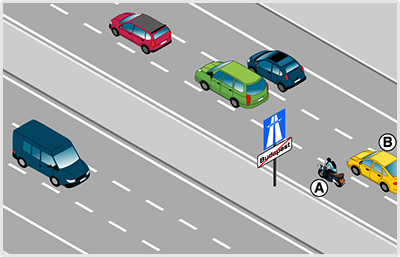
- 596. Ön az ’A’ jelű motorkerékpárral az autópálya legbelső forgalmi sávjában közlekedik. Van-e valamilyen kötelezettsége? #723967
- Igen, a mögötte gyorsabban haladó járművek közlekedését nem akadályozhatja.
- Igen, köteles az előzést folyamatosan irányjelzővel jelezni.
- Igen, minden körülmények között legalább 130 km/h sebességgel kell haladnia.
- 597. Ön az ’A’ jelű motorkerékpárt vezeti. Tovább közlekedhet-e az autópálya belső forgalmi sávjában? #723968
- Igen, mindaddig, amíg a középső forgalmi sávban haladó járműveket előzi.
- Igen, megkötés nélkül, hiszen személygépkocsival autópálya bármelyik forgalmi sávjában közlekedhet.
- Nem.

- 598. A képen látható helyen mindkét jármű csak irányváltoztatással tudja az útját folytatni. Melyik jármű haladhat tovább elsőként? #724031
- A jobbról érkező ’A’ jelű motorkerékpár.
- A balról érkező ’B’ jelű személygépkocsi.
- Kölcsönös megegyezés alapján haladhatnak tovább.
- 599. A képen látható helyen melyik jármű haladhat tovább elsőként? #724032
- Az ’A’ jelű motorkerékpár.
- A ’B’ jelű személygépkocsi.
- Kölcsönös megegyezés alapján haladhatnak tovább.
- 600. Ön az ’A’ jelű motorkerékpárt vezeti. A képen látható helyen... #724033
- elsőbbsége van a ’B’ jelű személygépkocsival szemben.
- elsőbbséget kell adnia a ’B’ jelű személygépkocsi részére.
- meg kell egyezniük a továbbhaladási sorrendben.

- 601. A képen látható helyen melyik jármű haladhat tovább elsőként? #724050
- Az ’A’ jelű személygépkocsi.
- A ’B’ jelű motorkerékpár.
- Kölcsönös megegyezés alapján haladhatnak tovább.
- 602. Ön a ’B’ jelű motorkerékpárt vezeti. A képen látható helyen... #724051
- elsőbbséget kell adnia az ’A’ jelű személygépkocsi részére.
- elsőbbsége van az ’A’ jelű személygépkocsival szemben
- meg kell egyezniük a továbbhaladási sorrendben.
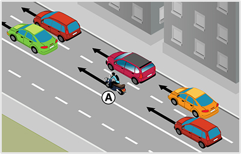
- 603. Szabad-e előznie az ’A’ jelű motorkerékpárosnak egyszerre több járművet az ábrán látható helyen? #724076
- Igen.
- Nem.
- Nem, egyszerre csak egyet, ami után a két személygépkocsi közé vissza kell térnie.
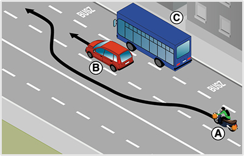
- 604. Szabályos-e, ha az ’A’ jelű motorkerékpáros az ábrán látható módon előzi meg a ’B’ jelű személygépkocsit? #724083
- Igen, mert a motorkerékpáros közlekedhet a legbelső forgalmi sávban is.
- Nem, mert a legbelső forgalmi sávban csak személygépkocsival lehet közlekedni.
- Nem, mert ha van autóbusz-forgalmi sáv az úttesten, a motoros köteles azon közlekedni.
- 605. Ön az ’A’ jelű motorkerékpárt vezeti. Szabad-e megelőznie az ábrán látható módon a ’B’ jelű személygépkocsit? #724084
- Igen.
- Nem.
- Ily módon nem, csak az autóbusz-forgalmi sáv igénybevételével.

- 606. Ön a ’B’ jelű motorkerékpárt vezeti. Megelőzheti-e az ábrán látható módon a ’C’ jelű kerékpárost? #724086
- Igen.
- Nem.
- Csak úgy, ha közben áttér a belső forgalmi sávba.
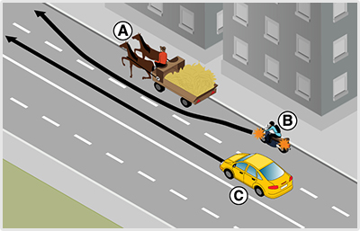
- 607. Az ábrázolt helyen szabad-e megelőznie a ’B’ jelű motorkerékpár vezetőjének az ’A’ jelű állati erővel vontatott járművet ugyanabban a forgalmi sávban? #724087
- Nem, mert ez esetben a két járműnek ugyanabban a forgalmi sávban tilos egymás mellett elhaladni.
- Igen, mert az állati erővel vontatott jármű csak nagyon lassan képes haladni.
- Igen, ha elég széles a forgalmi sáv.
- 608. Ön a ’B’ jelű motorkerékpárt vezeti. Szabad-e megelőznie az ábrán látható módon az ’A’ jelű állati erővel vontatott járművet? #724088
- Nem.
- Igen.